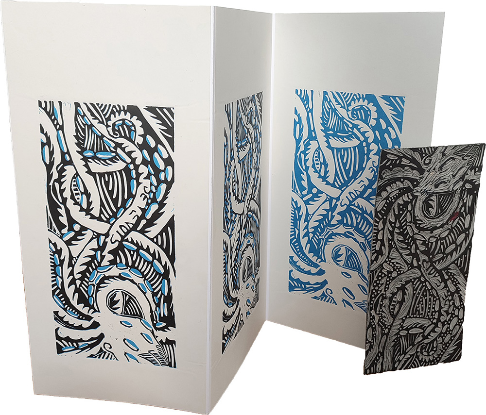
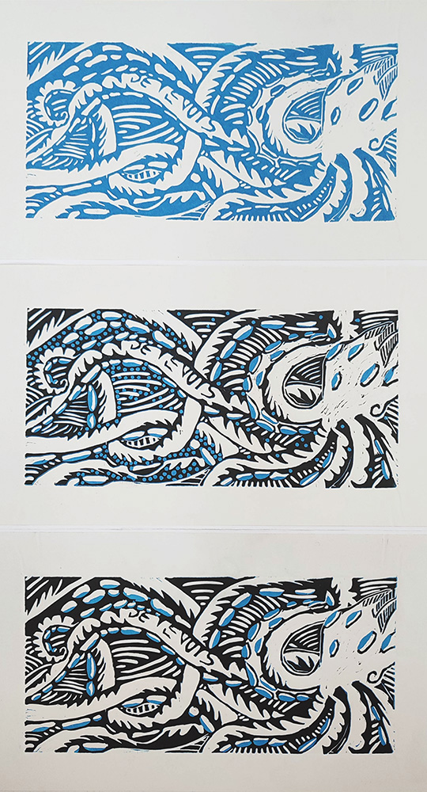

Création d’une linogravure autour du thème « les monstres ». L’objec tif était d’inventer un monstre capable de se multiplier pour occuper tout l’espace, tout en intégrant le titre au cœur de la composition. Le monstre choisi est un poulpe dont les tentacules, ornées d’yeux, se déployent progressivement. Au départ, seule la présence du monstre est visible, puis des détails émergent en arrière-plan pour envahir l’ensemble de l’espace. L’enjeu était de maîtriser les techniques d’impression, en l’occurrence la linogravure, ainsi que l’utilisation de formats de feuilles hors normes.
TECHNIQUES D'IMPRESSION
JE TE VOIS

